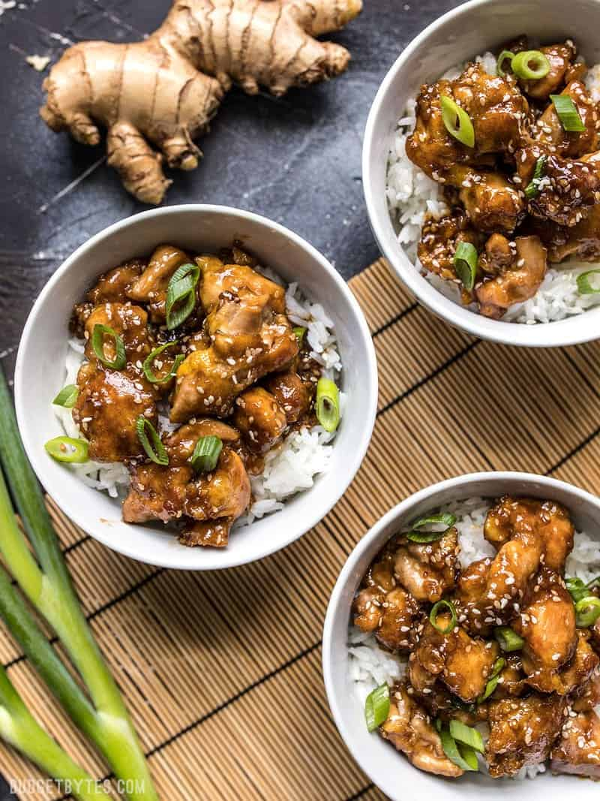

Sesame Chicken Recipe

Description
This Easy Sesame Chicken is seriously so easy that you’ll be tempted to toss those
take-out menus. The delicious sauce takes only a few ingredients, all of which you can
keep on hand indefinitely (keep your ginger in the freezer). You know, just in case you
need some sesame chicken like, now. Oh, and this take-out fake-out sesame chicken works
great for your weekly meal prep, too!
Ingredients
Chicken
- 1 Large Egg
- 2 Tbsp Cornstarch
- Pinch Salt & Pepper
- 1 lb Boneless Skinless Chicken Thigh
- 2 Tbsp Sesame Oil
Sauce
- 1/4 Cup Soy Sauce
- 2 Tbsp Water
- 1 Tbsp Toasted Sesame Oil
- 3 Tbsp Brown Sugar
- 1 Tbsp Rice Vinegar
- 1 tsp Grated Fresh Ginger
- 2 Cloves Garlic, Minced
- 1 Tbsp Sesame Seeds
- 1/2 Tbsp Cornstarch
Steps
- First, prepare the sauce. In a small bowl stir together the soy sauce, water,
sesame oil, brown sugar, rice vinegar, fresh ginger, minced garlic, cornstarch,
and sesame seeds. (Grate the ginger with a small-holed cheese grater). Set the
sauce aside.
- In a large bowl, whisk together the egg, 2 Tbsp cornstarch, and a pinch of salt
and pepper. Trim any excess fat from the chicken thighs, then cut them into small
1 inch pieces. Toss the chicken in the egg and cornstarch mixture.
- Add the cooking oil to a large skillet and heat it over medium flame. Wait until
the skillet is very hot, then swirl the skillet to make sure the oil coats the entire
surface. Add the batter coated chicken and spread it out into a single layer over
the surface of the skillet.
- Allow the chicken pieces to cook, undisturbed, until golden brown on the bottom.
Then, carefully flip the chicken, breaking up the pieces into smaller clumps as you
flip. Continue to cook the chicken until golden brown on the other side. Stir the
chicken as little as possible to avoid breaking the egg coating from the surface of
the chicken.
- Once the chicken is cooked through and golden brown on all sides, pour the sauce over
top. Toss the chicken to coat in the sauce. As the sauce comes up to a simmer, it will
begin to thicken. Continue to gently stir the chicken in the sauce until it has thickened,
then turn off the heat.
- Serve the chicken over a bed of rice and sprinkle the sliced green onions over top.